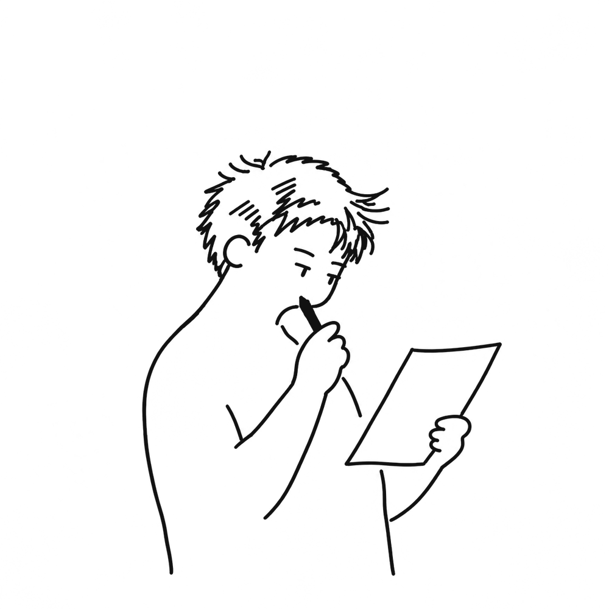
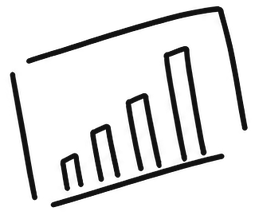
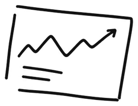
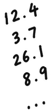
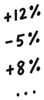
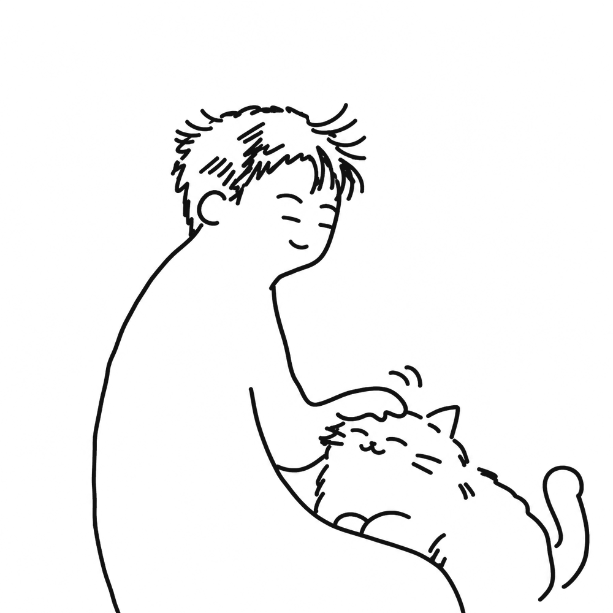
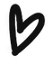

I don’t want numbers to be the end of my work.
I want them to help me understand people better and turn that understanding into something useful.





NUMBERS → PEOPLE → PRODUCTS
My background in economics and strategy taught me how to use data to understand growth, behavior, and where opportunities are being missed.
Working at tech companies also taught me that behind every number are real people making choices, facing problems, and trying to get something done. That is what drew me deeper into product work.
Through user research, prototyping, and product development, I can go beyond understanding what is happening and actually create something that helps people.
I want to bring both sides together, using data to understand the problem and product thinking to build something people genuinely find useful.
Selected work
now, the things I’ve been building · pick one :)


I studied Quantitative Economics at UC Irvine, and I’m now pursuing an M.S. in Engineering Design Innovation at Northwestern — learning to build the things my analysis used to only point at.
More about me
